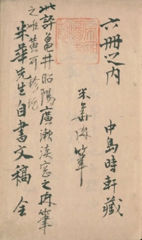
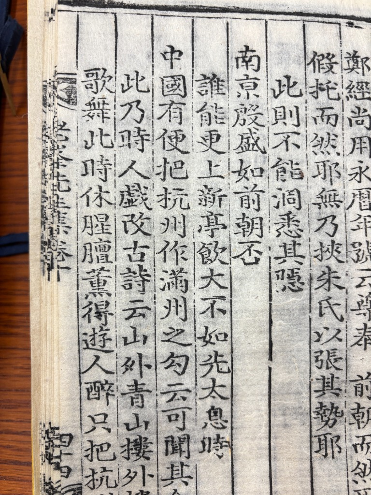

抄写、仿写与批评：李贺诗在日本江户时代的三重接受
(Bachelor's Thesis)

Collection of the National Diet Library of Japan: Nakajima Beika's Manuscript (中島米華稿本)
(Ongoing Master's Thesis)

Collection of Harvard-Yenching Library: Nobong Sŏnsaeng munjip (老峯先生文集卷十)